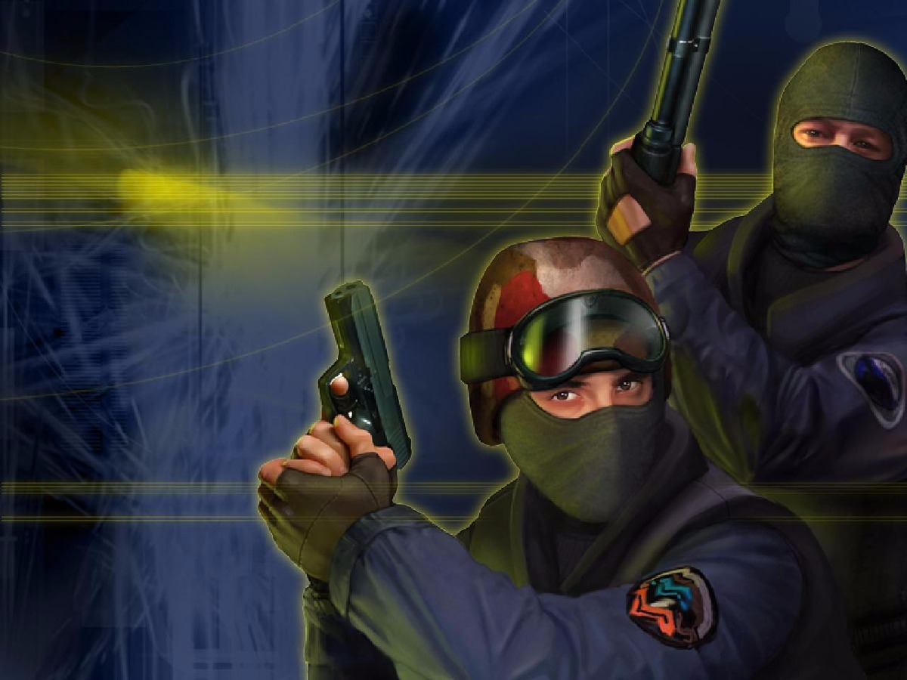

Counter Strike
Counter-Strike (também abreviado por CS) é um popular jogo eletrônico de tiro em primeira pessoa.[2] Inicialmente criado como um "mod" de Half-Life para jogos online, foi desenvolvido por Minh Le e Jess Cliffe e depois adquirido pela Valve Corporation. Foi lançado em 2000 para Windows, e posteriormente foram feitas versões para Xbox, Mac OS X e Linux.[3] Atualmente o game é jogado na versão Counter-Strike: Global Offensive.[4]
O jogo é baseado em rodadas nas quais equipes de contra-terroristas e terroristas combatem-se até a eliminação completa de um dos times, e tem como objetivo principal plantar e desarmar bombas, ou sequestrar e salvar reféns.
O Counter-Strike foi um dos responsáveis pela massificação dos jogos por rede no início do século, sendo considerado o grande responsável pela popularização das LAN houses no mundo.
Menu Inicial |